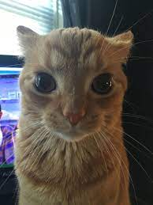

Mascotas
Mascotitas que tuve tanto perrito como gatito
Gato
Tuve un gato (michi, michu, bigotes) me acompaño desde mis 11 o 12 años hasta mis 14 años, apunto de cumplir 15, un día el gatito simplente desaparecio y nunca lo encontramos 🥺
Perrito
Tuve también un perrito (tita), donde vivia antes por los 2 puentes, tita perrito que nos acompaño a mi y a mi hermano, durante un tiempo, desde mi 4 años hasta mis 9 o 8, despues de un tiempo la envenenaron

Pepe
Aunque en la foto paresca endemoniado es mansito,y antes era una pulga literalmente media maximo unos 45cm es mascota de mis tios, lo tuvieron desde que yo tuve 9 , 8 años y sigue hasta la actualidad que tengo 16 años